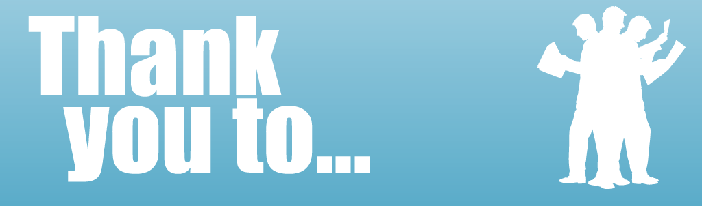

<div data-role="view" id="i-thank-you-tabstrip"  data-show="TranslateApp" style="background-color: #f3f3f3;">
    <div id="head" data-role="header" >
        <h2>
            <label for="title_credits" data-localize="titeltext_credits">Credits</label>
        </h2>

    </div>
    <div data-role="content">
        <ul data-role="listview" data-inset="true" data-theme="b">
            <!--  indhold -->
            <li>
                <div >
                    <br>
                    <label for="credits" data-localize="credits1">
                        This solution became only possible because of many good people, there different
                        inputs and many ideas. People that choosed to meet eachother with open mind and
                        with a belief in that we as persons can change bigger things by helping eachother. <br>
                        <br>
                        To the friendly people who helped translate:
                        Sila R. Weiss-Hug, Lilliana Bak.<br>
                        <br>
                        Selina Juul from Stopfoodwaste (NGO) for inspiring
                        talks and her long fight against unnecessary food waste
                        in Denmark and world in general. <br>
                        <br>
                        MR. Key for entering my life and the project when it was in the darkest hours and helping me giving full birth to

                        this depthfelt project and a girl called Heraia.<br>
                        <br>
                        Anine Brits for help to the Heraia universe. My many helpers for helping me to getting
                        the best out the life im given. My brother for pushing on and trust in me and the
                        project i started. To my family in general for backing up, supporting and beeing
                        there. <br>
                        <br>
                        Last not least.. <br>
                        Everyone who chooses to be a supporter and helping us to make changes to a little
                        bit better world. <br>
                        <br>
                        Yours Bjarke Steen Rasmussen <br>
                        Creator of &quot;recycleworld&quot;
                    </label>
                    <br>
                </div>
            </li>
        </ul>
        <br><br>
    </div>

</div>
